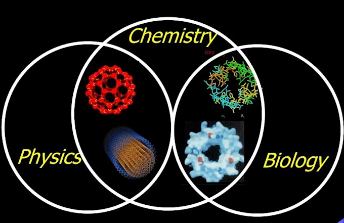

Building a Strong Understanding of High School Science
We provide tutoring for high school students who need additional support with their science coursework. Our sessions can be aligned with the student's current class, textbook and school curriculum, whether they need help understanding difficult concepts, completing assignments or preparing for tests and exams.

Biology, Chemistry and Physics
🧬 Biology
Biology explores living organisms and the systems and processes that allow life to function. Students learn how organisms are structured, how they interact with their environment and how biological processes occur at different levels.
Commonly used in Los Angeles:
Common areas:
Cells, genetics, evolution, ecology, biological processes, heredity and ecosystems.
Note: We make personalized curriculum for students residing outside California, homeschooled students, and students attending private and charter schools.
⚗️ Chemistry
Chemistry focuses on matter, its properties and the changes it undergoes. Students develop an understanding of chemical reactions and learn to use mathematical and scientific reasoning to describe and predict chemical behavior.
Commonly used in Los Angeles:
Common areas:
Atomic structure, periodic table, chemical bonding, reactions, stoichiometry, acids and bases, energy and matter.
Note: We make personalized curriculum for students residing outside California, homeschooled students, and students attending private and charter schools.
⚛️ Physics
Physics examines how matter and energy interact and how mathematical principles can be used to describe the physical world. Students learn to apply concepts and equations to solve problems and explain physical phenomena.
Commonly used in Los Angeles:
Common areas:
Motion, forces, energy, momentum, waves, electricity, magnetism and basic mechanics.
Note: We make personalized curriculum for students residing outside California, homeschooled students, and students attending private and charter schools.